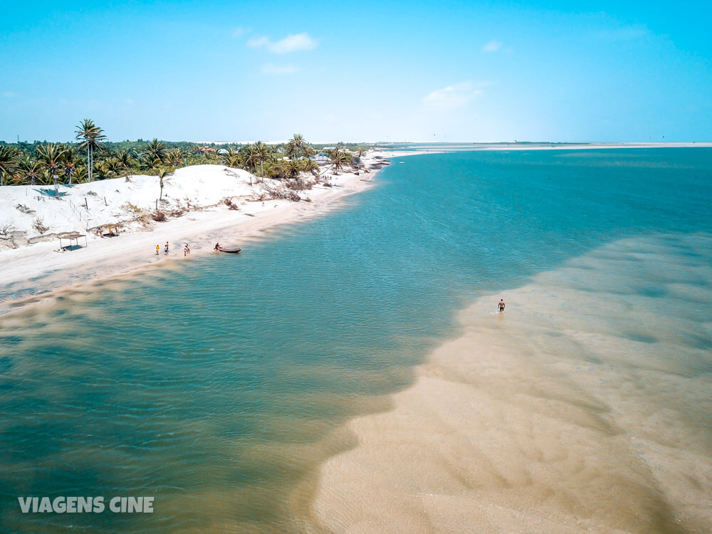

O Maranhão possui 217 municípios distribuídos em uma área de 329 651,496 km², sendo o oitavo maior estado do Brasil, um pouco menor que a Alemanha. Sua população no Censo Demográfico de 2022 era de 6.775.152 habitantes, sendo o décimo segundo estado mais populoso do país, com população superior à da Jordânia.
